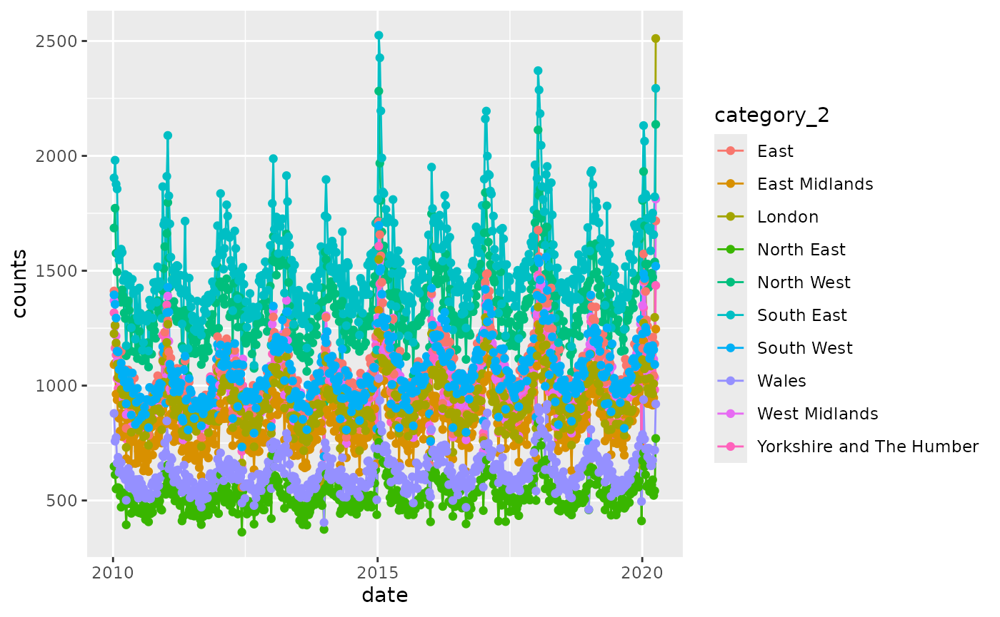
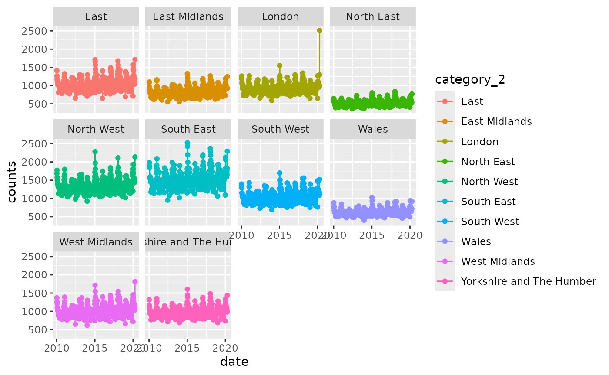

Dataset: ONS Weekly Provisional Registered Deaths in England and Wales
Source:vignettes/ons_mortality.Rmd
ons_mortality.Rmd
library(NHSRdatasets)
ons_mortality <- NHSRdatasets::ons_mortalityThis vignette details why the ons_mortality dataset was
created and how to load it.
Deaths registered weekly in England and Wales, provisional
Provisional counts of the number of deaths registered in England and Wales, by age, sex and region, from week commencing 8th January 2010 to 3rd April 2020.
This data has been made available through Office
of National Statistics under the Open Government Licence but is made
available in wide form across separate year’s Excel spreadsheets. These
were brought together, tidied in a way they could be merged together and
produced in long form using the code in the
vignette("create_ons_mortality") and a blog can be found on
the NHS-R
Community website.
This data continues to be made available by ONS but is not added to this dataset. Corrections may have occurred too between this data snapshot and what is available through the ONS website.
The dataset contains:
- category_1: character with categories that relate to grouped data like Persons, Males and Females but also for some other parts of the Excel dataset that aren’t headers like “average of same week over 5 years”
- category_2: character with categories for grouped ages, age bands and regions as well as text from Excel spreadsheets like “v 2013 (IRIS)”
- counts: numeric as counts of deaths recorded
- date: date format as yyyy-mm-dd
- week_no: integer relating to the week number starting at the first week of the year
Exploring the data
Looking at the unique values in category_1 using base R
which produces the data output as a data frame
unique(ons_mortality$category_1)
#> [1] "Total deaths"
#> [2] "All respiratory diseases (ICD-10 J00-J99) ICD-10"
#> [3] "Persons"
#> [4] "Males"
#> [5] "Females"
#> [6] "Region"
#> [7] NA
#> [8] "average of same week over 5 years"
#> [9] "Deaths where COVID-19 was mentioned on the death certificate (ICD-10 U07.1 and U07.2)"or using dplyr which produces the data output as a tibble
ons_mortality |>
dplyr::distinct(category_1)there is a category NA which may not have information
that can be used. When filtering for NA using
dplyr we can combine it with the base R function
is.na()
ons_mortality |>
dplyr::filter(is.na(category_1))
#> # A tibble: 52 × 5
#> category_1 category_2 counts date week_no
#> <chr> <chr> <dbl> <date> <int>
#> 1 NA NA 1779 2014-01-03 1
#> 2 NA NA 1925 2014-01-10 2
#> 3 NA NA NA 2014-01-17 3
#> 4 NA NA NA 2014-01-24 4
#> 5 NA NA NA 2014-01-31 5
#> 6 NA NA NA 2014-02-07 6
#> 7 NA NA NA 2014-02-14 7
#> 8 NA NA NA 2014-02-21 8
#> 9 NA NA NA 2014-02-28 9
#> 10 NA NA NA 2014-03-07 10
#> # ℹ 42 more rowsIncidentally to remove rows with NA an ! is
needed before the function in order to negate it
Or the function filter_out() can be used which can make
this easier to read as it may be easy to overlook a single character
!
ons_mortality |>
dplyr::filter_out(is.na(category_1))There are 52 rows with category_1 that is
NA and to view them all that’s possible in the console by
extending the tibble view with
library(magrittr)
ons_mortality |>
dplyr::filter(is.na(category_1)) %>%
print(n = nrow(.))
#> # A tibble: 52 × 5
#> category_1 category_2 counts date week_no
#> <chr> <chr> <dbl> <date> <int>
#> 1 NA NA 1779 2014-01-03 1
#> 2 NA NA 1925 2014-01-10 2
#> 3 NA NA NA 2014-01-17 3
#> 4 NA NA NA 2014-01-24 4
#> 5 NA NA NA 2014-01-31 5
#> 6 NA NA NA 2014-02-07 6
#> 7 NA NA NA 2014-02-14 7
#> 8 NA NA NA 2014-02-21 8
#> 9 NA NA NA 2014-02-28 9
#> 10 NA NA NA 2014-03-07 10
#> 11 NA NA NA 2014-03-14 11
#> 12 NA NA NA 2014-03-21 12
#> 13 NA NA NA 2014-03-28 13
#> 14 NA NA NA 2014-04-04 14
#> 15 NA NA NA 2014-04-11 15
#> 16 NA NA NA 2014-04-18 16
#> 17 NA NA NA 2014-04-25 17
#> 18 NA NA NA 2014-05-02 18
#> 19 NA NA NA 2014-05-09 19
#> 20 NA NA NA 2014-05-16 20
#> 21 NA NA NA 2014-05-23 21
#> 22 NA NA NA 2014-05-30 22
#> 23 NA NA NA 2014-06-06 23
#> 24 NA NA NA 2014-06-13 24
#> 25 NA NA NA 2014-06-20 25
#> 26 NA NA NA 2014-06-27 26
#> 27 NA NA NA 2014-07-04 27
#> 28 NA NA NA 2014-07-11 28
#> 29 NA NA NA 2014-07-18 29
#> 30 NA NA NA 2014-07-25 30
#> 31 NA NA NA 2014-08-01 31
#> 32 NA NA NA 2014-08-08 32
#> 33 NA NA NA 2014-08-15 33
#> 34 NA NA NA 2014-08-22 34
#> 35 NA NA NA 2014-08-29 35
#> 36 NA NA NA 2014-09-05 36
#> 37 NA NA NA 2014-09-12 37
#> 38 NA NA NA 2014-09-19 38
#> 39 NA NA NA 2014-09-26 39
#> 40 NA NA NA 2014-10-03 40
#> 41 NA NA NA 2014-10-10 41
#> 42 NA NA NA 2014-10-17 42
#> 43 NA NA NA 2014-10-24 43
#> 44 NA NA NA 2014-10-31 44
#> 45 NA NA NA 2014-11-07 45
#> 46 NA NA NA 2014-11-14 46
#> 47 NA NA NA 2014-11-21 47
#> 48 NA NA NA 2014-11-28 48
#> 49 NA NA NA 2014-12-05 49
#> 50 NA NA NA 2014-12-12 50
#> 51 NA NA NA 2014-12-19 51
#> 52 NA NA NA 2014-12-26 52Notice that this code has used the pipe %>% which
comes from the package magrittr which is also in
tidyverse. This pipe, rather than the base R |> allows
the data to pass to the next level which is seen as ..
It’s not clear from this search what the counts 1779 and 1925 relate
to (other than being from January 2014) and this can only be understood
by going back to the original spreadsheets and data manipulation which
can be found in the vignette("create_ons_mortality").
Small charts exploration
A line chart to see all the Regions using ggplot2
by_region <- ons_mortality |>
dplyr::filter(category_1 == "Region") |>
ggplot2::ggplot(ggplot2::aes(date, counts, colour = category_2)) +
ggplot2::geom_line() +
ggplot2::geom_point()
by_region
In the view of small charts using the facet grid to show each area separately
by_region + ggplot2::facet_wrap(~category_2)